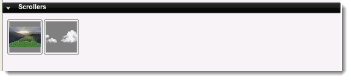
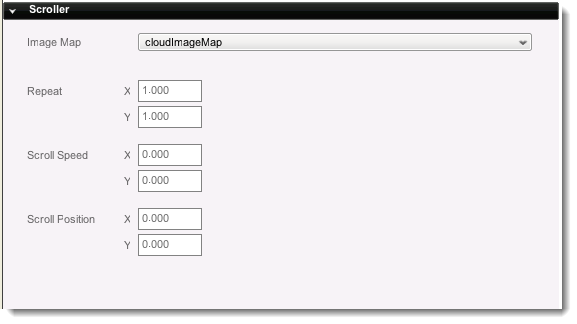

Introduction
A scroller object (t2dScrollerObject) allows for a single plane to
have a constantly moving image. This is very useful for effects such as a
flowing river or a background mountain range that moves when your
player runs forward. For a short tutorial on using scrollers,
click
here.
Creation
Scrollers are automatically created on the Create Tab whenever an
imagemap is created. If an imagemap is set to cell, the scroller will
disappear as it can only use Full mode.

To add one of these Scrollers into your scene, click on the one you wish
to add then drag and drop it into the Scene View. It will now exist,
however will not yet scroll - you will need to edit the Properties for
that.
Properties

- Image Map - The image to display on this Scroller
- Repeat - Number of times to repeat the texture
- X - Number of times to repeat the texture along the X plane
- Y - Number of times to repeat the texture along the Y plane
- Scroll Speed - The speed to scroll the texture
- X - The speed to scroll the texture along the X plane
- Y - The speed to scroll the texture along the Y plane
- Scroll Position - The scroll position of the texture
- X - The scroll position of the texture along the X plane
- Y - The scroll position of the texture along the Y plane
Script Representation
new t2dScroller() {
imageMap = "waveImageMap";
scrollX = "15";
scrollPositionX = "0.861267";
mUseSourceRect = "0";
canSaveDynamicFields = "1";
useMouseEvents = "1";
Position = "-6.000 3.000";
size = "737.000 381.000";
CollisionMaxIterations = "3";
BlendColor = "1 1 1 0.4";
AlphaTestValue = "-1";
mountID = "13";
};
Conclusion
Scrollers allow a quick way for rivers, clouds and even traffic to
move through your beautiful scenes. You can set them to auto-scroll or
manually control their movement from script. For a short tutorial on
using scrollers, click here. |